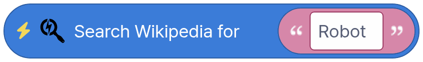
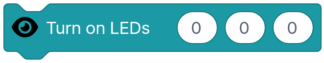
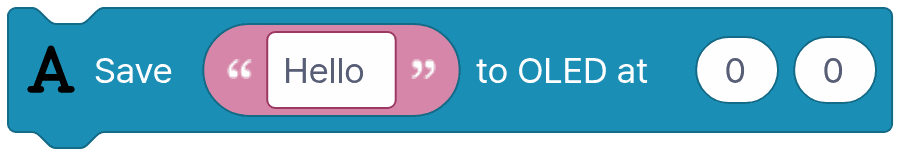
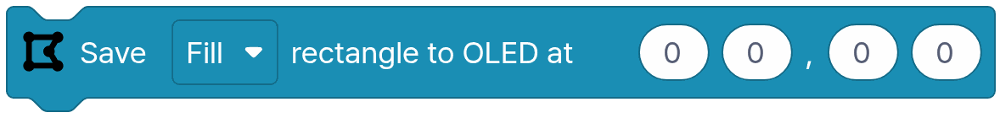
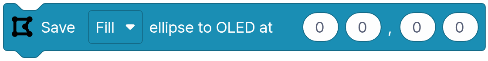
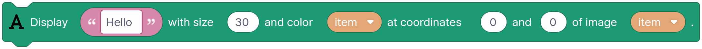
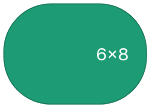
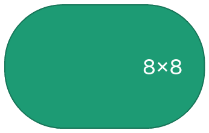
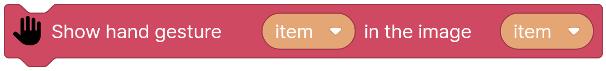

Block coding¶
PiBrain Maker uses Blockly for block coding. Besides the standard blocks there are PiBrain blocks that call the openpibo Python package. The [Python code] button shows the Python code your blocks make.
Note
This page is generated from the IDE toolbox (docs/tools/gen_block_guide.py). Each picture shows the block as it comes out of the toolbox.
Everything runs inside PiBrain. Only the [Collect] category needs the internet, and it is only in the Korean edition.
Categories¶
Standard Blockly blocks (hover over a block to see what it does)
├── Logic (7)
├── Loops (5)
├── Math (13)
├── Text (15)
├── Lists (12)
├── Colour (4)
├── Variables (appear when you make one)
└── Functions (appear when you make one)
PiBrain blocks
├── Start (1)
├── Audio (3)
├── Collect (4)
├── Device (7)
├── Oled (11)
├── Speech (7)
├── Vision (16)
├── Rec (36)
└── Utils (12)
PiBrain blocks¶
Start¶

Run the code.
Audio¶

Select and play audio at set volume.

Enter music file name to play.

Stop the audio currently playing.
Collect¶
Note
Korean edition only (Korean weather regions and a Korean news feed). The Global edition does not have this category.


(Internet!) Search Wikipedia with the given keyword. returns a value

(Internet!) Search for comprehensive weather information in a specific area. returns a value

(Internet!) Search for weather information in a specific area. returns a value

(Internet!) Retrieve search results with news keywords. returns a value
Device¶

Check button status. returns a value


Turn on LED

Turn on LED with a color variable.

Turn off LED

Connect USB Device.

Send message to USB Device.

Disconnect USB Device.
Oled¶

Set the font size on the OLED display.


Display text on the OLED screen.

Display dynamically selected image on OLED.

Display a specified image on OLED.

Display a specified image data on OLED.


Draw a rectangle on OLED.


Draw an ellipse on OLED.

Draw a line on OLED.

Invert colors on the OLED screen.

Display content on OLED screen.

Clear the OLED screen.
Speech¶

Make speech on the robot and save it to a file. Korean and English are detected automatically.

Make speech on the robot and say it. Korean and English are detected automatically.

Save text as espeak robot voice to a file.

Say text with the espeak robot voice.

Start LLM server.

Send text to the LLM server and get a reply. The system prompt sets how piBo should answer. returns a value

Stop the LLM server.
Vision¶

Capture an image. returns a value

Load a specified image file. returns a value

Load an image file. returns a value

Create a blank image filled with the chosen color. returns a value

Save as an image file.

Display an image variable in IDE.

Display an image variable in OLED.

Draws a rectangle on the image.

Displays a circle in the image.

Displays a line in the image.


Display text on the image.

Transform image style. returns a value

Resize the image. returns a value


Turns the 6×8 picture you draw by tapping dots into an image (scaled to the camera size). returns a value

Turns the 8×4 picture you draw by tapping dots into an image (scaled to the camera size). returns a value


Turns the 8×8 picture you draw by tapping dots into an image (scaled to the camera size). returns a value
Rec¶

Detect and identify faces in the specified image. returns a value

Show faces in the image.

Analyze face in image(age, gender, emotion) returns a value

Show face analysis in the image

Find face landmark in the image returns a value

Show face landmark in the image.

Get the list of names in the face dictionary. returns a value

Train face from image.

Delete a specific face from training faces.

Recognize who faces are in an image. returns a value

Save face training data to file.

Load face training data from file.

Analyze face direction/distance in the image. returns a value

Show face direction/distance in the image

Load Object detection model

Find objects in the image. returns a value

Find objects in the image. (RAW) returns a value

Show objects in the image.

Find QR in the image. returns a value

Find QR in the image. (RAW) returns a value

Show QR codes in the image.

Identify and analyze human poses in the specified image. returns a value

Show pose data in the image.

Evaluate and interpret pose data from the image and save the results. returns a value

Set a tracker for a specific location in the image.

Track thing in the image. returns a value

Show tracking result in the image.

Load Hand gesture model.

Load Hand gesture model

Recognize Hand gesture in the image. returns a value


Show hand gesture in the image.

Detect Marker in the specified image. returns a value

Show marker in the image.

Load a model you taught and saved in the Classifier. Folder mymodel, then the model name. (image, hand, face, pose)

Classify the image with the loaded classifier model and return the best matching name. Hand, face and pose models return empty text when no hand, face or body is in view. returns a value

Draws what the last [Classify with classifier model] saw on that image: points and bones for hand and pose, points for face, plus the class name and probability.
Utils¶

Pause the process for a specified duration of seconds.

Retrieve the current time value. returns a value

Obtain the current time. returns a value

Verify if an element is included in a list or array. returns a value

Retrieve the value associated with a specific key in a dictionary. returns a value

Add a new key-value pair to an existing dictionary.

Generate a new empty dictionary. returns a value

Set the values of the specified range in the array.

Confirm the existence of a file or directory. returns a value

Change a variable’s type to String. returns a value

Convert a variable to a specific numeric type. (Integer or Float) returns a value

Get angle returns a value